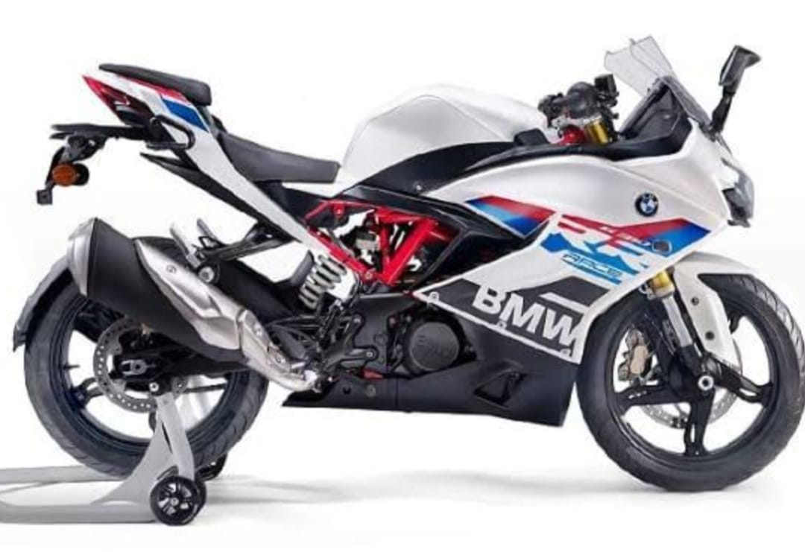

BMW GT 610
RS-etron> GT
BMW Motorrad is the motorcycle brand and division of German automotive manufacturer, BMW.[1] It has produced motorcycles since 1923, and achieved record sales for the fifth year in succession in 2015. With a total of 136,963 vehicles sold in 2015, BMW registered a growth of 10.9% in sales in comparison with 2014.[2] In May 2011, the 2,000,000th motorcycle produced by BMW Motorrad was an R1200GS.[